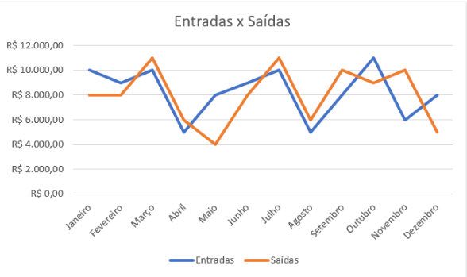
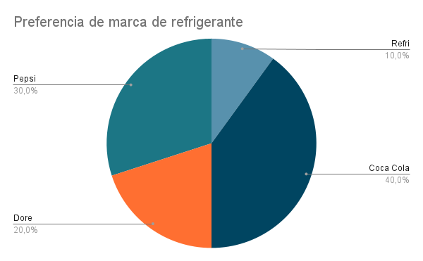

Gráficos e seus Tipos
Introdução
Quando falamos em "interpretar dados", estamos nos referindo a entender o que as informações apresentadas em tabelas e gráficos querem nos dizer. Por exemplo, se tivermos uma tabela sobre a quantidade de lixo reciclado em nossa escola, precisamos entender o que esses números significam. Uma "análise de dados" envolve examinar os dados de maneira mais profunda. Podemos procurar padrões, tendências ou até mesmo comparar diferentes conjuntos de dados. Vamos imaginar que tenhamos informações sobre o consumo de energia em casa. Poderíamos analisar se há um aumento ou diminuição no uso de energia ao longo do tempo. Os diferentes tipos de gráficos e quando usar cada um deles, especialmente no contexto de interpretar e analisar dados de pesquisas. Vamos explorar alguns tipos comuns de gráficos:
Gráfico de Barras: Quando usar: Para comparar diferentes grupos ou categorias. Para mostrar como uma variável muda ao longo do tempo. Útil quando os dados são discretos (categóricos). Exemplo prático: Podemos usar um gráfico de barras para comparar a quantidade de lixo reciclado em diferentes meses do ano ou para mostrar a quantidade de energia consumida por diferentes aparelhos domésticos.

Gráfico de Linhas: Quando usar: Para mostrar tendências ao longo do tempo. Útil para representar dados continuos. Exemplo prático: Se tivermos dados sobre a temperatura média em um determinado local ao longo de vários meses, um gráfico de linhas seria de proteção para mostrar as variações sazonais.

Gráfico de Pizza (ou Setores): Quando usar: Para representar partes de um todo. Útil quando queremos mostrar a distribuição percentual de diferentes categorias. Exemplo prático: Se quisermos mostrar a proporção de diferentes tipos de resíduos em um programa de reciclagem, um gráfico de pizza seria adequado.

Gráfico de Dispersão: Quando usar: Para visualizar a relação entre duas variáveis. Útil para identificar padrões ou correlações nos dados. Exemplo prático: Se quisermos analisar como a quantidade de exercício está relacionada ao nível de energia, podemos usar um gráfico de dispersão para ver se há uma tendência.
Gráfico de Setores Empilhados: Quando usar: Para representar partes de um todo, mas também mostrar a contribuição relativa de subcategorias. Útil para comparar diferentes grupos e suas subdivisões. Exemplo prático: Se quisermos mostrar a composição do consumo de energia em uma casa, podemos usar um gráfico de setores empilhados para representar diferentes aparelhos.